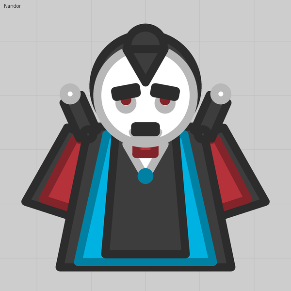

Lesson 11
A dash on right click
An invisible barrel pointing backward fires a harmless shot with huge Recoil, and the kick throws the tank forward.
What you see
Right-click and the tank lunges forward. Vampires, pouncing cats, charging bulls, fleeing thieves: all the same barrel.
The trick
Recoil pushes the tank away from the shot. So a barrel that points backward pushes the tank forward. Make it invisible, Fires on right click, with Recoil as high as the stock tanks go and a shot that does nothing and vanishes at once. A slow Reload turns it into an ability with a cooldown.
Numbers that matter
| Field | Value | Notes |
|---|---|---|
| Recoil | 16 (12 to 20 seen) | Stock recoil tops out at 17; the editor allows up to 20 |
| Reload | 4.2 | One dash every few seconds. Three dashes stacked at Reload 12 make a leap |
| Lifetime | 0.1 s | The shot must not hang around |
| Launch speed | 3 | Gets the shot clear of the body instantly |
| Tip | "Right click to dash" | Players only learn an ability if you tell them |
Gotchas
- The shot still costs budget each time, but at Reload 4.2 that is almost nothing.
- Recoil also applies on the left button: a big front-facing cannon with high Recoil walks the tank backward, which is how the stock Booster and Rocketeer work.
- Put nothing between the muzzle and the body: the shot spawns at the muzzle and a part there would catch it.
Where we used it
